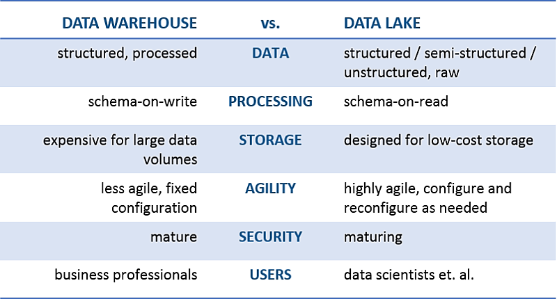
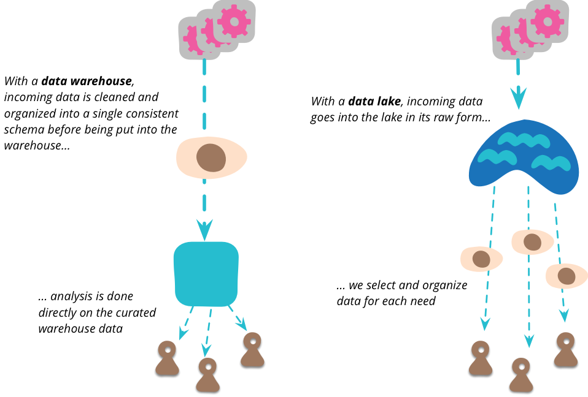

Data Warehouse
VS
Data Lake
Created by Irham Dzuhri, Powered by Reveal.js
Data Warehouse
Data warehouse is a repository for structured, filtered data that has already been processed for a specific purpose
~ https://www.talend.com/resources/data-lake-vs-data-warehouse/
Data Lake
A data lake is a system or repository of data stored in its natural format, usually object blobs or files
~ Wikipedia
Key Different
Flow
Benefit
SEKIAN & Terima Kasih
TANYA & JAWAB